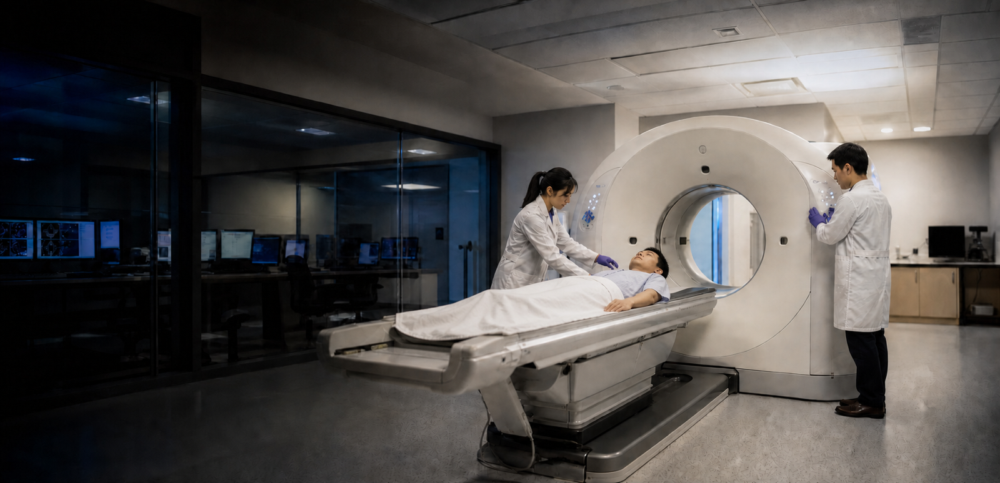

神经退行性疾病成像
阿尔茨海默病、帕金森病与额颞叶痴呆等神经退行性疾病，以脑内病理性蛋白进行性累积、突触丢失与神经元死亡为特征。分子病理级联反应在明显的认知或运动症状出现前数年乃至数十年即已启动，而基于症状评估的临床诊断只能在疾病进入相对晚期、近乎不可逆的阶段才得以明确。PET 分子成像能够在活体人脑中直接、无创地可视化并量化神经病理学标志物——包括淀粉样蛋白与tau 蛋白沉积、神经炎症、神经递质系统功能与突触密度。这一能力提供了疾病存在与进展的客观、在体生物标志物，可在疾病修饰干预最可能奏效的关键窗口期实现神经退行性变的临床前检出。它同时是新型疗法临床试验不可或缺的工具，可提供可量化的生物学终点，加速当前不可治愈脑部疾病治疗方法的研发。我们的研究推进面向神经退行性及脑血管脑疾病的 PET 成像范式，实现更早、更精准的诊断，并支撑疾病修饰疗法的研发。
神经退行性疾病成像研究团队目前正与其他机构合作伙伴一同寻求外部资金支持。如有意向，请发送邮件至 petlab@hust.edu.cn 与我们联系。
相关科研项目

国家杰出青年科学基金项目
全数字PET成像
全数字 PET 成像平台可完成海量并行通道与高速闪烁信号流的高精度数字化处理，为核医学临床诊疗与粒子物理实验提供高保真度的定量分子探测手段。

国家自然科学基金原创探索计划项目
高灵敏高计数率全数字化硅光电倍增器
高灵敏、高通量全数字化硅光电倍增集成电路可在强辐照环境下分辨重叠闪烁脉冲信号，适配高计数率 PET 成像与辐射探测场景。

国家自然科学基金国家重大科研仪器研制项目
质子束生物组织能量输运观测装置
自研质子束专用测量设备可定量解析质子束在生物组织内的能量沉积分布，实现剂量实时监测，支撑质子治疗方案精准优化。

国家自然科学基金重大国际（地区）合作研究项目
平板PET成像
平板 PET 探测硬件拓展了分子成像应用体系，可实现术中成像、临床前小动物成像及便携式床旁扫描，弥补传统环形 PET 系统的应用局限。
最新新闻

实验室纪事
我们的使命是打造一片适宜顶尖科学蓬勃发展的科研环境：保障科研人员发展、孕育创意与创新、完善硬件平台与基础设施，支撑 PET 实验室肩负服务国家的使命。
谢庆国
首席研究员，教授，博士生导师
数字化探测技术与仪器开发
质子治疗监测

进一步探索
重点论文
A novel iterative iso-transmission line empirical material decomposition algorithm for multi-energy photon-counting CT
Jan 01
Biomedical Signal Processing and Control,
99, 2025, 106853. doi:10.1016/j.bspc.2024.106853.
Performance Evaluation of New PET/CT DigitMI 930
Jan 09
IEEE Transactions on Radiation and Plasma
Medical Sciences, vol. 9, no. 5, pp. 578-585, May 2025, doi:
10.1109/TRPMS.2025.3526659.
Investigation of a Dual-Panel In-Beam PET Based on Digital Detectors for Proton Therapy Monitoring With Different Monitoring Strategies: A Simulation Study
Jan 30
IEEE Transactions on Radiation and Plasma
Medical Sciences, vol. 10, no. 4, pp. 582-592, April 2026, doi:
10.1109/TRPMS.2025.3584122.